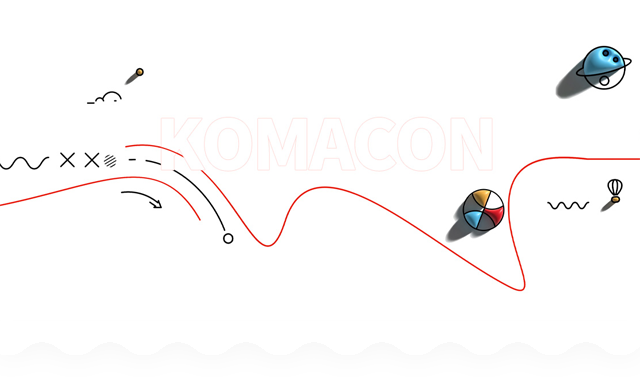

진흥원소개
연혁
- 2021
- 11.03제21회 만화의 날 기념식
-
09.30<웹툰특화 1인창조기업 지원센터> 사업
실시
-
09.30국제만화가대회(ICC) 온라인 교류전 개최
-
09.042021 한중일 신인만화가 콘테스트 온라인 개최
-
09.04제24회 부천국제만화축제&제5회
경기국제코스프레페스티벌 온라인 개최
- 2020
- 12.18가족친화 우수기업' 재인증
- 09.19제23회 부천국제만화축제 온라인개최
-
09.182020 한중일 신인만화가 콘테스트 온라인 개최
- 08.31만화·웹툰 평론 공모전 개최
-
04.28<#함께_이겨내요 #코로나19> 만화인 응원
캠페인 진행
-
02.17부천국제만화축제 문화체육관광부 선정 '예비
문화관광축제' 지정
-
01.06부천국제만화축제 5년 연속 경기관광대표축제
선정
- 2019
-
09.07중국 충칭 ‘2019 한중일 신인만화가 콘테스트’
개최
- 08.14제22회 부천국제만화축제 개최
-
08.02한국만화영상진흥원 제9대 이해경 이사장 취임
-
02.01한국만화영상진흥원 제6대 신종철 원장 취임
- 2018
-
12.07부천국제만화축제 4년 연속 ‘경기관광축제’
선정
-
11.03만화의 날 기념식 제2회 코스튬페스타 개최
-
08.15‘만화, 그 너머’ 제21회 부천국제만화축제 개최
-
07.25만화영화상영관 ‘경기도 다양성영화 상영관’
선정
- 07.07제1회 코스튬 페스타 개최
- 2017
- 11.03제17회 만화의 날 기념식 개최
- 10.20‘웹툰 스타트업 캠퍼스’ 개관
- 07.22경기국제코스프레 페스티벌 개최
- 07.20글로벌 만화도시 네트워크 개최
- 07.19제20회 부천국제만화축제 개막
-
05.12만화산업일자리창출 자문위원회 위촉 및 출범
-
07.145대 이사장 김동화 선임, 5기 이사회 출범
- 2016
-
12.01일·가정 양립 우수기관 여성가족부 장관 표창
-
11.24부천국제만화축제 2017년 경기도10대축제 선정
-
07.28한국국제만화마켓(KICOM) 및 글로벌 만화도시
네트워크 개최
- 07.27제19회 부천국제만화축제 개최
- 05.28경기꿈의학교 ‘만화상상놀이터’ 운영
- 04.262016 한중일 신인만화가 콘테스트 개최
- 2015
-
11.25<부천국제만화축제> 2016년 경기도 10대
축제 선정
- 09.05꿈의 학교 ‘만화상상놀이터’ 개최
- 08.12제18회 부천국제만화축제 개최
- 07.21소사 어울마당 개관
- 04.272015 한중 신인만화가 콘테스트 개최
- 02.20한국만화애니메이션역사사전 발간
-
01.052014 한국만화박물관 소장자료 해제 연구
- 2014
- 11.03제14회 만화의 날 행사 개최
- 08.13제17회 부천국제만화축제 개최
-
04.29경기도 공사립 박물관ㆍ미술관 지원사업
우수박물관(홍보 분야)상 수상
- 2013
-
12.05미래창조과학부 ‘스마트워크 우수사례 대상’
수상
- 11.03제13회 만화의날 개최
- 08.14제16회 부천국제만화축제 개최
- 07.134대 이사장 이희재선임
- 05.07한국만화박물관 다양성영화관 개관
-
04.111인 창조기업 비즈니스센터
오픈(부천만화창작스튜디오)
-
01.04제3대 오재록 원장 취임 (2기 잔여임기 보선)
- 2012
- 08.15제15회 부천국제만화축제 개최
- 08.092012 부천만화대상 선정
- 08.092012 장한후배상 선정
- 08.09미국 창작스튜디오 K-Studio 운영
- 2011
-
12.142011<장애인먼저> 실천상 ‘단체상’ 수상
- 08.17전국학생만화공모전 대회
- 08.17제14회 BICOF2011 개최
- 01.01제2대 김병헌 원장 취임
- 2010
- 09.152010 BICOF & ICC 개최
- 03.01‘2010 한국만화연감’ 발간
- 2009
-
11.03제9회 만화의 날 기념식 개최,
뮤지엄만화규장각 개관
-
09.23한국만화영상진흥원 개원식 및 제12회
부천국제만화축제 개최
- 09.22한국만화영상진흥원 등기
- 08.17한국만화영상진흥원으로 이전
-
07.28임형택 한국만화영상진흥원 초대 원장 취임
- 2008
- 10.18대한민국 문화예술상(대통령상) 수상
- 08.14제11회 부천국제만화축제 개최
- 04.25제9회 전국학생만화공모전 본선 대회
- 02.28‘문화산업진흥지구’ 지정
- 2007
- 08.16제10회 부천국제만화축제 개최
- 05.20제8회 전국학생만화공모전 본선대회
- 05.05어린이날 만화잔치 개최
- 04.222007년 둘리거리축제
- 2006
- 08.17제9회 부천국제만화축제 개최
-
05.14제7회 전국학생만화공모전 본선대회 개최
- 05.05어린이날 만화잔치 개최
-
03.29부천만화정보센터 출범(1기 이사장 : 이두호)
- 2005
-
12.30문화관광부장관 “문화산업발전 유공” 기관 표창
수상
-
09.30제7차 세계만화가대회 및 제8회
부천국제만화축제 개최
-
05.22제6회 전국학생만화공모전 본선대회 및 심사
- 2004
- 10.14제7회 부천국제만화축제 개최
- 10.08만화산업진흥팀 신설
-
07.27스포츠서울 P.T.P TOP브랜드 대상 선정(센터)
- 05.16제5회 전국학생만화공모전 본선대회
-
03.08만화규장각 정보통신부 “청소년 권장사이트”
선정
- 2003
- 10.28센터 사무실 종합운동장으로 이전
- 05.18제5회 전국학생만화공모전 본선대회
- 03.03만화산업지원관 위탁업무 개시
- 2002
-
10.02제5회 부천만화축제 “국제코믹북페어” 개최
- 05.12제3회 전국학생만화공모전 본선대회
- 05.05한국만화박물관 어린이날 행사 개최
-
03.07서버 이전 위탁 운영 (부천지역정보센터)
- 2001
- 12.27한국박물관 협회 등록필
-
12.27문화관광부 “오늘의 우리만화상”수상 (다시보는
우리만화)
- 11.10만화 e-카드 서비스 개시
-
10.12한국만화박물관 개관/제4회 부천만화축제
개최/부천만화영상산업박람회 개최
- 10.04한국만화박물관 완공
-
06.14지식· 인력개발 사업관련
평생교육시설신고필(경기도 부천교육청
- 06.04“만화쪽지” 웹서비스 개시
-
03.02만화규장각 www. Komics.net 서비스 개시
- 01.03만화도서관 전산화 개시
- 01.01(사)부천만화정보센터 출범
- 2000
- 12.22만화규장각 사업 1차년도 사업개시
- 09.30제3회 부천만화축제 개최
-
06.10부천만화정보센터 창립총회 및 발기인 대회
-
05.05제1회 전국학생만화공모전 개최 및 전시회
- 02.04만화정보관 개관 (도서관)
- 1999
- 10.02부천만화정보센터 운영위원회 구성
-
09.01사이버 만화도시 오픈 (www.cartooncity.co.kr)
-
05.04부천만화정보센터 개관 (도당동 북부도서관
이전)
- 03.01만화정보관 자료구축사업 개시
- 1998
-
12.18제1회 부천만화축제 개최(제1회
부천국제학생애니메이션페스티벌(PISAF) 기념)
- 12.04부천만화정보센터 설립
-
11.16“부천만화정보센터 설치및운영조례” 제정